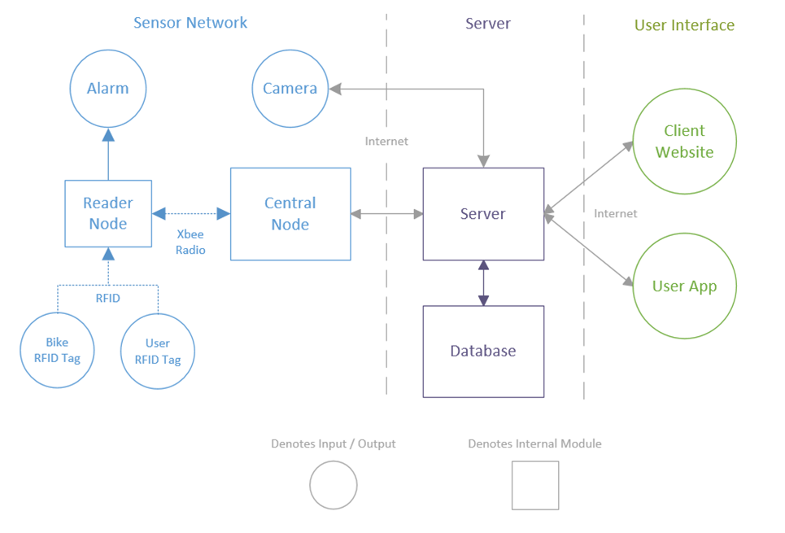

RFID Bike Monitoring
Group #5: Max Bittker, Ben Brown, Connor MacLean, Morgan Williams
See our project live at http://cyclesentry.xyz
INTRODUCTION
Motivation & Objectives
- Discourage bike theft on Queen’s University
- Collect useful data on bike rack utilization rates
- Explore the feasibility of RFID bike monitoring
Project Overview
- Three main sub-systems:
- Sensor Network: RFID communication hardware
- Server System: database and control logic
- Mobile app: for Android devices
Challenges
- Supervisor change led to a budget with room for only one RFID reader
- Purchased RFID reader:
- Range is impractically small (~5 cm)
- Only detects one tag at a time
How it Works
- RFID tags used to "check in" bikes
- One tag on the user
- One tag on their bike
- Readers on bike racks
- System notifies user if bike goes missing!
- Statistics collected for the University




CONCLUSIONS & RECOMMENDATIONS
Feasibility
- Technologically feasible to implement
- Would require more expensive RFID readers
- Costs could be mitigated by:
- Technology maturation
- Bulk purchasing
- Custom/non-hobbyist caliber parts
Future Work
- Explore systems based on other technologies
- Possibilities: Bluetooth, Wi-Fi
- Downside: Requires power source on bicycles
Possible Integrations
- Video camera that saves footage of bike rack vicinity for the time period of detected thefts
- Theft data/notifications sent to Campus Security
- Kingston Police using RFID scanners to read the tags of recovered stolen bikes